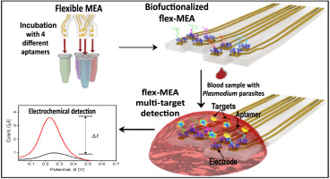
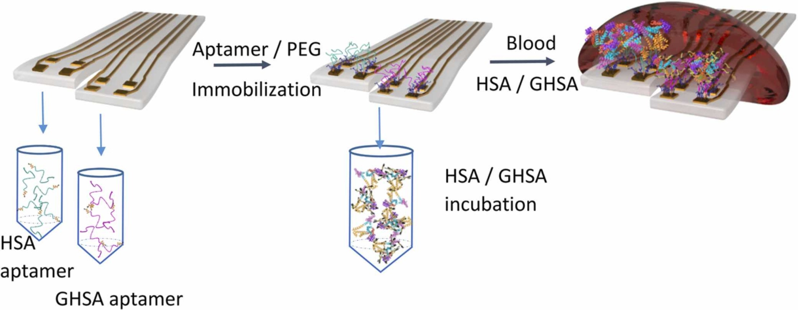
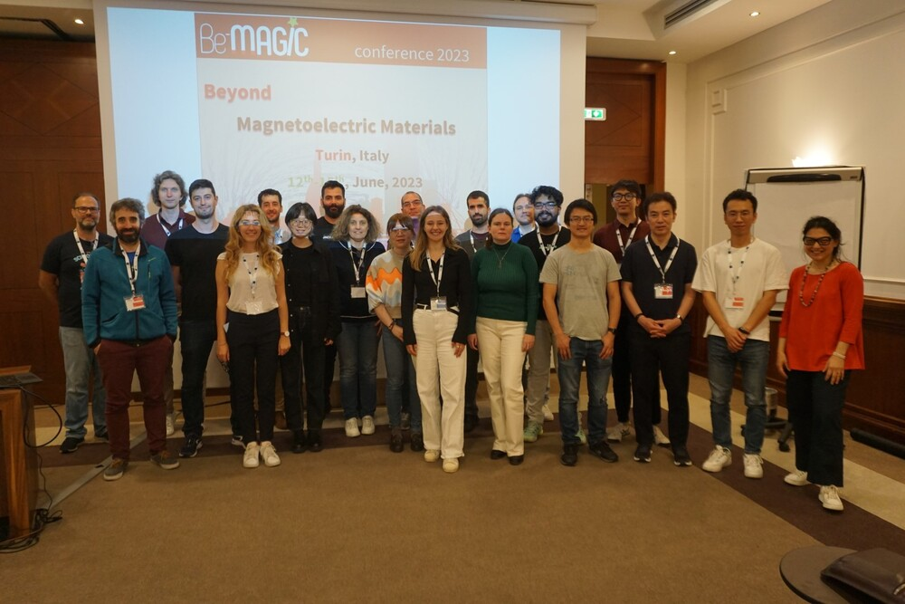
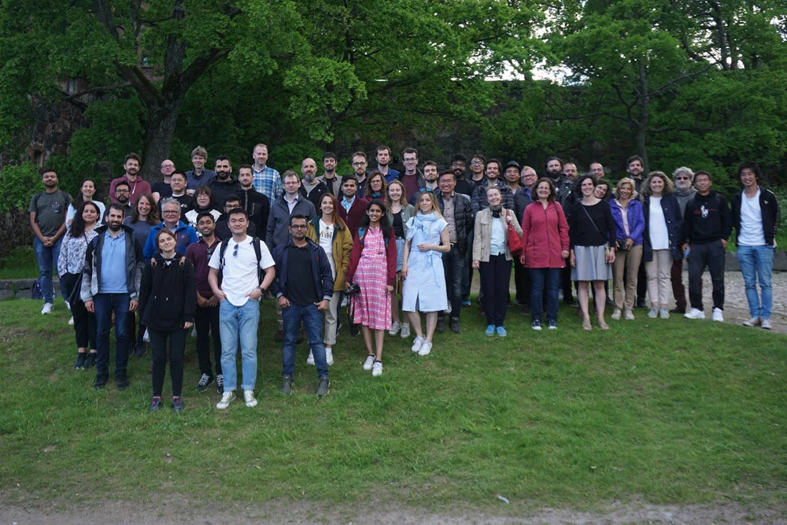

Song Chen
Short Bio
I am currently a Physics Ph.D. candidate at Spin-Ion Technologies and Université Paris-Saclay, working under the mentorship of Dr. Ravelosona dafiné, the director of research CNRS and CTO of Spin-Ion Technologies. My research involves magnetoelectric (“ME”) materials for energy-efficient information technology and “ME” materials for data security in information technology using Multiferroics/Magneto-ionics/Surface charging, with a special focus on the boosting magneto-ionic effect using ion irradiation and implantation.
Research Interest:
- Ion-material Simulation: SRIM, iradina, IMSIL, CORETO, TRIDYN, MARLOWE, RustBCA
- Machine Learning: fairness AI, penalization and augmentation methods
- E-field controlled magnetization VCMA, Strain-mediated ME (Magnetoelectric) Effects, Straintronic, iontronic, E-filed induced spin reorientation, SOT.
- Micro-, Nanofabrication
- Neuromorphic Computing Neuromorphic Sensing and Perception, Hybrid Computing Systems, Brain-Inspired Robotics
News
- [OCT. 2023] The Tech Blog "The Hitchhiker's Guide to Galaxy" has now a chinese version. The content inside can be separately edited. Later maybe a german version.
- [OCT. 2023] A Tech Blog "The Hitchhiker's Guide to Galaxy" was integrated to this personal homepage, the webblog is based on Hexo: a webblog framework
- [SEP. 2023] The BeMAGIC Final Event will be held between 14-15 December 2023 at UAB, Barcelona, Spain.
- [AUG. 2023] Personal Homepage, I will begin to upload some built-by-myself softwares and scripts to the GitHub to help this community.
- [AUG. 2023] I will participate in the upcoming 13th Joint European Magnetic Symposia JEMS2023, in the form of poster presentation with the title Reversible magneto-Ionic effect in crystallized W-CoFeB-MgO-HfO2 ultra-thin films with perpendicular anisotropy.
- [JUN. 2023] Secondment at the institute CNR-IMM, in collarboartion with professor Alessio Lamperti.
- [DEC. 2022] Secondment at the department Applied Physics of Aalto University, in collarboartion with professor Sebastiaan van Dijken.
- [JUN. 2022] Secondment at the department Applied Physics of Aalto University, in collarboartion with professor Sebastiaan van Dijken.
- Show more
Projects
-
 Software
The software is used to 1. control the E-field applied for the VCMA/Magnetoelectric coupling; 2. to control the elctromagnetic field; 3. to control the SMU to apply one bias current ,and meanwhile measuring the Hall voltage. All the parameters can be set correspondingly and sequencer can be made to realize the automation.PDF Non-Open Source
Software
The software is used to 1. control the E-field applied for the VCMA/Magnetoelectric coupling; 2. to control the elctromagnetic field; 3. to control the SMU to apply one bias current ,and meanwhile measuring the Hall voltage. All the parameters can be set correspondingly and sequencer can be made to realize the automation.PDF Non-Open Source -
 Sens. Actuators B Chem.Sensors and Actuators B Chemical
-
 Adv. Mater. Interfaces
Advanced Materials Interfaces
Adv. Mater. Interfaces
Advanced Materials Interfaces -
 Sens. Actuators B Chem.Sensors and Actuators B Chemical
-
 JEMS
13th Joint European Magnetic Symposia
JEMS
13th Joint European Magnetic Symposia -
 BeMAGIC
-
 BeMAGIC
BeMAGIC Winter School: Magnetoelectricity in biomedicine healthcare for the 21st century ETH Zürich
BeMAGIC
BeMAGIC Winter School: Magnetoelectricity in biomedicine healthcare for the 21st century ETH Zürich -
 BeMAGICBeMAGIC Winter School: Magnetoelectricity in biomedicine healthcare for the 21st century ETH Zürich
-
 BeMAGIC
BeMAGIC Winter School: Magnetoelectricity in biomedicine healthcare for the 21st century ETH Zürich
BeMAGIC
BeMAGIC Winter School: Magnetoelectricity in biomedicine healthcare for the 21st century ETH Zürich -
 BeMAGIC
BEMAGIC Workshop - Gateway to industry:innovation, entrepreneurship and marketable products using ME technology
BeMAGIC
BEMAGIC Workshop - Gateway to industry:innovation, entrepreneurship and marketable products using ME technology
Publications [ Google Scholar] [ ResearchGate]
Conferences & Events
Contact
Address: 10 Bd Thomas Gobert, 91120 Palaiseau
Office Location: Centre de Nanosciences et de Nanotechnologies
Email: